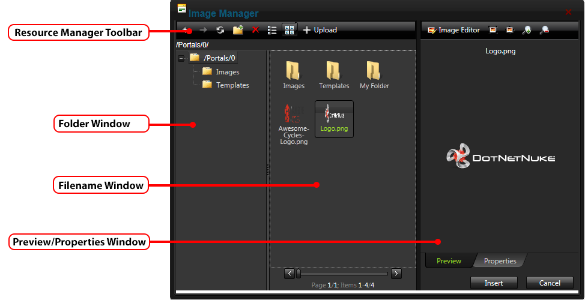
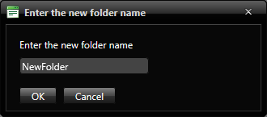
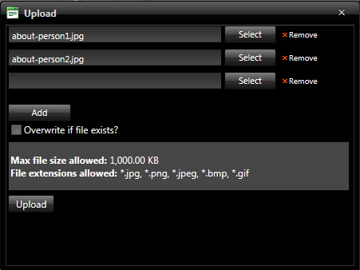
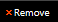
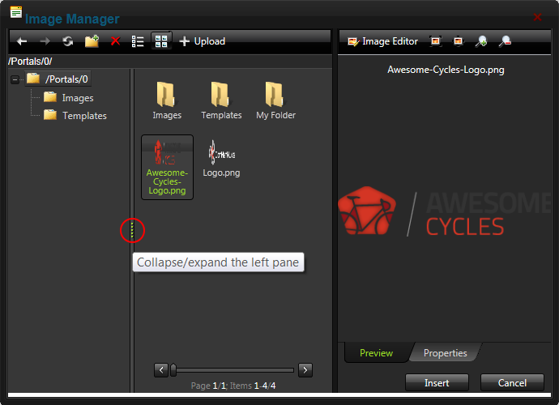

How to navigate to, select or manage folders and files using the Resource Manager of the DotNetNuke.RadEditorProvider for the RTE. The Resource Manager is commonly used for the Image Manager, Document Manager, Flash Manager, Media Manager and Template Manager of the RadEditor.
Note: Access to some tools is restricted by role.
The Resource Manager consists of the following toolbar and windows: Resource Manager Toolbar, Folder Window, Filename Window, Preview/Properties Window.

Resource Manager Toolbar
| Tool | Icon | Description |
|---|---|---|
| Back | Click to go back by one folder in the Folders window. | |
| Forward | Click to move forward by one folder in the Folders window. | |
| Refresh | Click to refresh to retrieve newly updated files. | |
| New Folder |
 |
|
| Delete |
|
|
| Grid View |
Click to view the files in the Filename window in a compact grid without thumbnail images. |
|
| Thumbnails View | Click to view the files in the Filename window with large folder icons and thumbnail images. | |
| Upload |
Clicking the Upload button will open the Upload dialog box. Here you can select one or more files to upload and view the settings for uploading files. Note 1: The maximum file size that can be upload is listed at the base of the Upload dialog box at Max file size allowed. The default setting is 1,000KB. If you attempt to upload a file of a greater size then the following message is displayed "[FileName]: The size of the uploaded file exceeds max size allowed." Note 2: The list of file extensions that can be uploaded is listed at the base of the Upload dialog box at File extensions allowed. If you attempt to add a file not listed here the following message is displayed "[FileName]: The extension of the uploaded file is not valid. Please provide a valid file!" The list of allowed file extensions reflects the settings configured for this site by your Host.
 Tip: Click the Remove  button to remove a file which has been selected for upload. |
Folder Window: This window displays the folders of the Digital Asset Management module that is located on the Admin > File Management page using a hierarchical tree structure. A folder named "My Folder" is displayed to all users (with the exception of SuperUsers) that allows users to view and manage their personal images. This folder is unique to the individual user and cannot be accessed or edited by other users.
Select a folder to view its sub-folders and/or files in the Filename Window. Folders can be moved by dragging into a different folder. Right click a folder to perform Delete, Rename, New Folder or Upload.
Filename Window: Displays a list of the folders and/or files within the selected folder. Select a file to view a preview and/or properties information in the Preview/Properties Window. Files can be moved by dragging into a different folder. Right click on an image or folder to perform Delete, Rename, New Folder or Upload.
Tip: Click the Collapse/Expand the left pane button to hide/show the Folder Window. This is useful once you have navigated to the required folder as it provides additional space to view files details.

Collapse/Expand the left pane
Preview/Properties Window: Displays a preview and/or properties of the selected file. Properties can be modified as required.